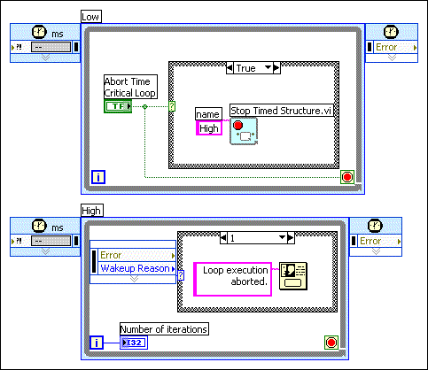

Use the Stop Timed Structure VI to abort the execution of a timed structure programmatically. Specify the name of the timed structure you want to abort by wiring the structure name in a string constant or control to the name input of the Stop Timed Structure VI. For example, in the following block diagram, the lower Timed Loop includes the Stop Timed Structure VI. The upper Timed Loop runs and displays the number of iterations it has completed. If the user clicks the Abort Time Critical Loop button on the front panel, the Wakeup Reason output of the Left Data node returns a value of Aborted, a dialog box appears, and when the user clicks OK in the dialog box, the VI stops running.
